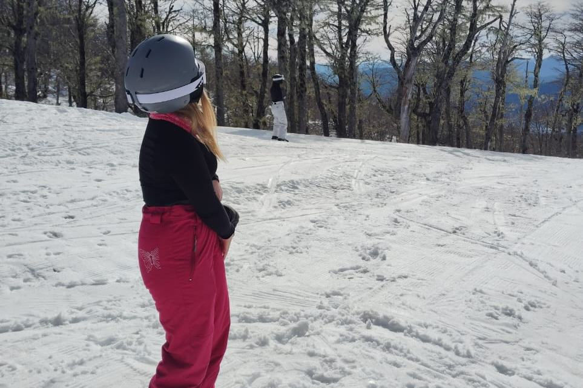

Home / Experiences / Ski Lessons
Huilo Huilo · Mocho Choshuenco destination, Los Ríos
Ski Lessons
Alpine ski instruction at the Huilo Huilo ski area, for all ages.

- Duration
- 2 h per lesson
- Altitude / section
- Huilo Huilo
- Level
- All levels
- Season
- June to September
- Minimum
- 1 person
- Guide : guests
- 1:6
Includes and details
- Ski gear and lift ticket not included
All our experiences include a SERNATUR-registered guide, technical gear, protected-area entry ticket, transfer from Choshuenco, snack, photos, radio and rescue equipment, and accident insurance.
Per person: CLP 60,000 per lesson
Ask on WhatsAppAuthorised local operator
SERNATUR registration No. 108568 · CONAF permit in protected areas · Trip leader ANGM Mountain Guide No. 37028.
SERNATUR registration No. 108568 · CONAF permit in protected areas · Trip leader ANGM Mountain Guide No. 37028.